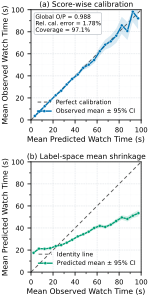
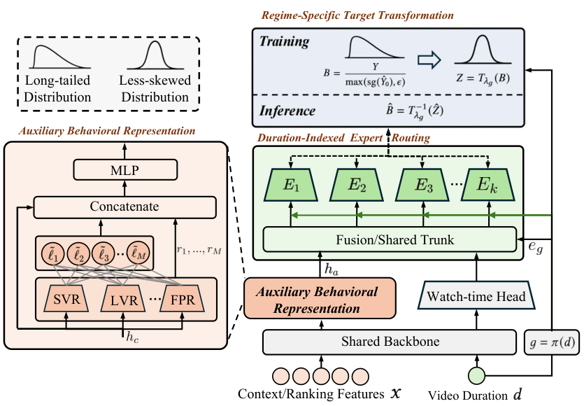
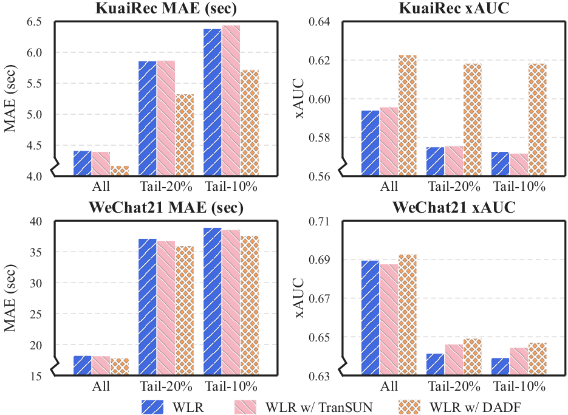

目录 · 11 节
1它到底在解决什么问题？2先分清两种“偏”3框架：冻结原模型，只学一个修正倍数4三个模块各做什么5训练目标和上线时的边界6实验：离线平均提升主要来自弱模型7消融与长尾8线上结果9我怎么看10一个推荐团队可以怎么试11一句话结论和评价分享 SHARE
做短视频推荐里时长预估的人值得读，尤其是线上时长模型已经很成熟、不想推倒重来的团队。但要带着一个问题读：离线平均提升主要来自弱模型，强模型上的收益小得多。论文要解决的是，时长模型整体上是准的，但按用户真实看了多久分组去看，短的被高估、长的被低估，这部分误差会影响排序和曝光。核心思想一句话：把原模型冻住，再训一个小网络预测“真实时长是原预测的几倍”，乘回原预测上，排序侧接口完全不变。离线在两个公开数据集、七个原模型上平均降低 MAE（平均绝对误差）4.33%，在快手线上降低 12.57%，三个排序阶段的人均使用时长分别涨了 0.649%、0.235%、0.199%，都已全量。我认为“冻结原模型 + 乘性修正”这个工程形态值得借鉴，三个模块各自的贡献则要打折看。
它到底在解决什么问题？
观看时长是短视频推荐里最重要的连续目标之一，比点击、点赞更能区分“划走”“看了一会儿”和“看完还回看”。时长预估错了会改变候选的先后顺序：被高估的视频拿到过多曝光，被低估的深度内容被压下去。整体平均上这些误差可能互相抵消，但流量分配已经被扭曲。
线上成熟的时长模型通常和特征管线、多任务训练、模型更新、下游排序目标绑在一起，换掉它要做特征迁移、容量评估、接口适配，牵涉多个服务阶段。所以作者选了一个侵入最小的设定：原模型和它输出的那个标量都不动，只在后面接一个第二阶段，并且只用上线时拿得到的信号。
先分清两种“偏”

这张图是全文的出发点，值得多看一眼。左图问的是“模型说 30 秒的那些样本，真实平均是不是 30 秒”，答案是基本是。右图反过来问“真实看了 5 秒的那些样本，模型平均说了多少”，答案是明显多于 5 秒；真实看了 200 秒的，模型平均说得少。作者把后者叫做标签空间的均值收缩。
两个问题方向相反，所以一个模型完全可以左图校准、右图收缩。任何有噪声的回归都会出现右图这种向均值靠拢的现象，作者也承认这不等于模型有偏，其中一部分是上线时根本无法预测的随机性。所以论文的目标收窄为：原预测之外，上线时的特征里还有没有能预测的残差。按平方误差算，整体均方误差最多能降低的量，等于“给定上线信号后残差的条件均值”的平方在全体样本上取平均；如果原预测已经用尽了这些信息，这个上限就是 0，修正什么也学不到。
作者还按视频时长四分位分开看，每一段里收缩都还在。说明这不只是长短视频混在一起造成的，时长在后面只被当成一个分组索引，而不是误差的原因。
框架：冻结原模型，只学一个修正倍数

DADF（分布感知的去偏框架，Distribution-Aware Debiasing Framework）的训练目标是一个倍数 ，其中 是真实时长， 是冻结模型的预测， 防止除以接近 0 的数，原预测不回传梯度。修正网络预测一个正数 ，最终输出 。下游拿到的仍然是一个时长标量，所以排序公式、多目标融合都不用改。
修正网络的输入包括原预测、排序特征、原模型最后一层映射之前的原始输出，以及其他互动目标的表示。真实时长和其他目标的标签只在训练时当监督，上线时不进入修正网络。
三个模块各做什么
第一个模块按时长段做目标变换。倍数 本身是长尾的：原预测很小而用户看了很久时，倍数会非常大，直接回归会被少数极端样本主导。作者对每个时长段学一个 Box–Cox 参数 ，把 变换成更对称的 ：
上线时用反变换 还原， 时是 。 和修正网络一起训练。变换是单调的，同一段内不改变样本的先后顺序。论文附录图 7 显示学出来的 随时长段变长大体在下降。
下面用 手算几个例子，看变换和上线截断怎么起作用：
| 原预测 | 真实时长 | 倍数 B | 对数变换后 Z | 说明 |
|---|---|---|---|---|
| 20 秒 | 8 秒 | 0.4 | −0.92 | 高估，修正要往下拉 |
| 20 秒 | 60 秒 | 3 | 1.10 | 低估，修正要往上推 |
| 2 秒 | 150 秒 | 75 | 4.32 | 超出 [−4, 4]，不进入变换空间的损失 |
| 任意 | 任意 | — | — | 上线时倍数截断在 0.1 到 10 之间 |
原始倍数从 0.4 到 75，跨了两个多数量级；取对数后都在几个单位之内，所以回归不再被倍数为 75 的那种极端样本主导。训练时变换空间的损失会丢掉 超出 [−4, 4] 或 超出 [0.001, 100] 的样本。上线时倍数被限制在 [0.1, 10]，意味着修正最多把原预测放大 10 倍或缩小到十分之一，原模型的判断始终是底子。
第二个模块按时长段硬路由到专家：每条曝光按视频时长落到一个段，只激活这一段的专家网络，专家看的是完整输入而不只是时长。硬路由的好处是上线只算一个专家，不会多路并发。作者在附录里讲得很清楚：如果时长本来就是输入特征，按它分段并没有带来新信息，只是改变了参数怎么分工，效果要靠消融来证明。
第三个模块引入辅助行为表示，因为短播、长播、完播这类互动目标的 logit 往往含有时长标量没表达出来的状态。每个辅助 logit 被展开成 8 个固定变换：原值 、、、、、、、；开方和对数前先过 ReLU，所以负的 logit 不会出问题。这些展开值再和各自塔的隐层一起送进一个多层感知机。进入修正分支的这些量不回传梯度，辅助头只由自己的标签训练。线上直接复用原模型已有的互动头，公开代码里则用标签训练轻量的替代头。
训练目标和上线时的边界
总损失有四项：变换空间里 的均方误差，权重 1.0；原始时长空间里 和 的 Huber 损失，权重 0.8；让每段变换后分布均值接近 0、方差接近 1、偏度接近 0 的矩约束，权重 0.05；辅助头的二分类损失，权重 0.10。第二项把变换拉回下游真正用的那个量上，避免 只为了让分布好看而学偏。
时长段的划分在离线是等频切分，KuaiRec 4 段、WeChat21 3 段；线上用 4 个固定段，按历史流量统计和工程经验定。段数在一个适中范围内结果都比较稳，切得太细每段样本不够。
实验：离线平均提升主要来自弱模型
两个公开数据集：KuaiRec 有 1,253 万次曝光、7,176 个用户，交互很稠密；WeChat21 有 731 万次交互、2 万个用户，更稀疏。七个原模型覆盖直接回归、离散化、时长去混杂和分布建模。对照是把 TranSUN（一种乘性修正方法）改造成冻结原模型的版本，三者共用同一个冻结检查点和随机种子。指标是 MAE 和 XAUC（任取两条样本，预测先后与真实先后一致的比例）。
下表摘出 KuaiRec 上三个有代表性的原模型：
| 原模型（KuaiRec） | 原始 MAE | 加 DADF | 原始 XAUC | 加 DADF |
|---|---|---|---|---|
| VR，直接回归 | 4.584 | 4.235 | 0.5578 | 0.6125 |
| TPM，树状序数分解 | 4.459 | 4.166 | 0.5495 | 0.6233 |
| D2Q，按时长去混杂的分位数模型 | 4.123 | 4.106 | 0.6319 | 0.6345 |
| EGMN，指数-高斯混合模型 | 4.081 | 4.002 | 0.6245 | 0.6257 |
DADF 在全部 14 个组合里 MAE 和 XAUC 都最好，改造后的 TranSUN 只在 10 个组合里改善了 MAE。但这张表要细看：VR（直接回归）的 XAUC 涨了 0.055，TPM（树状序数分解）涨了 0.074，而原本最强的 D2Q（按时长去混杂的分位数模型）和 EGMN（指数-高斯混合模型）只涨了 0.003 和 0.001，MAE 也只降了 0.4% 和 1.9%。加上修正后，七个模型的 XAUC 都落在 0.61 到 0.635 之间。所以平均 4.01% 的 XAUC 提升主要来自把弱模型拉到强模型附近；如果你的线上模型已经接近 EGMN 这一档，离线预期应该按 1% 到 2% 的 MAE 来定。
作者做了一个容量对照：把每个原模型的参数加到和“原模型 + DADF”相当，参数平均多了 31.79%，XAUC 反而降了 0.0013。这说明收益不是参数多带来的，而是“冻结后再拟合残差”这种两段式结构带来的。
消融与长尾
在 WLR（加权逻辑回归）原模型上去掉每个模块，指标都会变差，但幅度很小。KuaiRec 上完整版 MAE 4.1723，去掉目标变换是 4.1901，去掉时长路由 4.1823，去掉辅助表示 4.1865，差距都在 0.5% 以内。对比一下：WLR 原始 MAE 4.414，加 DADF 后降了约 5.5%；改造后的 TranSUN 是 4.364。去掉任何一个模块的版本仍然远好于 TranSUN，说明 DADF 和 TranSUN 之间约 4.4% 的差距，大部分不是这三个模块带来的，可能来自输入更全、原始空间的 Huber 损失等其他设计。论文对这一点的拆解不够，三个模块的必要性要打折看。

尾部结果更有说服力。KuaiRec 上 MAE 降幅从全量的 5.48% 升到最长 10% 视频上的 10.43%，XAUC 提升从 4.82% 升到 7.98%，说明修正在样本最稀疏的地方帮助最大。按时长分桶，降幅在 [180, 200) 秒这一段最高，达到 23.8%。按真实时长看，[0, 20) 秒降了 20.7%，正好是图 1 里高估最严重的那一端。也就是说，修正主要落在原模型最吃力的两头：很长的视频和很快划走的曝光。
线上结果
在线上日志上，MAE 降了 12.57%，高峰时段 MAE 从 15.78 降到 14.43。三个阶段各做一次实验：先 7 天 A/A 验证流量和指标，再 7 天 A/B，只有实验组开 DADF，原模型、下游目标和召回逻辑都不变。
| 指标 | 精排 | 粗排 | 降级服务 |
|---|---|---|---|
| 人均使用时长（主指标） | +0.649% | +0.235% | +0.199% |
| App 总时长 | +0.656% | +0.265% | +0.216% |
| 完播率 | +0.467% | +0.075%（不显著） | +2.210% |
| 短播率（越低越好） | −0.477% | −0.109%（不显著） | −0.515% |
主指标在三个阶段都显著，平台给的零假设接受区间大约是 ±0.12% 到 ±0.16%。精排的提升最大，降级服务的完播率涨了 2.21%，可能是降级模式下原模型本身更弱，修正的空间更大，这是我的推测。三处都已全量。
我怎么看
值得借鉴的有两点。第一是工程形态：冻结原模型、只输出一个倍数、接口不变，并且倍数被截断在 0.1 到 10，上线风险很低，出问题时关掉第二阶段就能回到原状态。第二是诊断方式：同时画按预测分桶和按真实值分桶两张图，能区分“模型不校准”和“模型在两头收缩”，这对任何连续目标都适用。
存疑的有三点。第一，离线平均数被弱模型拉高，强模型上只有 1% 到 2%。第二，消融里每个模块只贡献不到 0.5%，和 TranSUN 的大差距没有被拆清楚。第三，线上 12.57% 的 MAE 降幅远大于离线，而线上复用了原模型已有的互动头，可用信号比离线公开实现更丰富，这两个数字不能直接比。
一个推荐团队可以怎么试
- 先画图 1 那两张诊断图。如果按真实时长分桶的收缩很轻，修正的上限就很低，不必往下做。
- 先做最简单的版本：冻结原模型，训一个小网络回归 ，输入原预测、原始特征和已有互动头的 logit，原始空间加一个 Huber 损失，上线时倍数截断。看 MAE 和 XAUC 能拿到多少。
- 有收益再逐个加按段变换和时长路由，每加一个都和多种子的对照比，确认不是噪声。
- 上线优先看长视频和快速划走两头的指标，再看人均时长。
一句话结论和评价
这篇最值得借鉴的是：不改原时长模型，只学一个截断过的乘性修正倍数，就能在不动接口的前提下把收益全量上线。
| 维度 | 评价 |
|---|---|
| 问题重要性 | 高。时长预估直接影响排序和曝光，成熟模型又很难替换 |
| 方法创新性 | 中。乘性修正已有先例，按段变换、硬路由和辅助表示都是常见组件 |
| 实验证据 | 中偏高。七个原模型、两个数据集加三个线上阶段都已全量；但强模型收益小，模块拆解不足 |
| 工程成本 | 低。只加一个第二阶段网络，上线只激活一个专家，接口不变 |
| 是否值得尝试 | 值得，先做最简版本，按段变换和路由再逐个验证 |
| 适用场景 | 已有成熟时长或其他连续目标模型、想做低风险增量改进的推荐排序系统 |
读完这篇，你觉得
夜读鸮记下了，谢谢你的反馈。
点一下即可，无需登录；再点一次撤回。只统计匿名次数，不记录你是谁。
讨论
欢迎补充实验细节、复现经验或不同看法。需 GitHub 登录。
正在加载讨论…